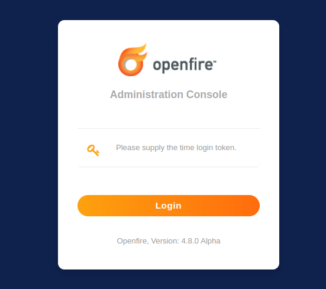

Not infrequently, account credentials of an Openfire server that was set up a long time ago get lost in
time. This prevents access to the Admin Console of Openfire, which hampers administration of the instance.
This short guide explains how to configure Openfire to accept a password that can be used exactly once to
log into the Admin Console, allowing you to configure a new administrative user, or reset the password for
an existing administrator.
One-Time Access Token Configuration
One of the most asked questions on this community forum is how to reset the Openfire admin password such
that you can gain access to the web based administration console. Prior to release version 4.3.1, you had to
go through the server setup process again to reset the admin password. This process was somewhat scary as
people typically don't trust that rerunning setup would not break your configuration settings.
There is now a simpler way with Openfire version 4.3.1 and higher. The steps are as follows.
Stop Openfire
Locate Openfire's conf/openfire.xml and edit it with your favorite text editor.
Add a tag within the root <jive> tag like so:
<oneTimeAccessToken>secretToken</oneTimeAccessToken>, where secretToken is
whatever you want:
Start Openfire
For best results, use an incognito/private browsing web browser session to view the Openfire admin console http://ipaddress:9090 or https://ipaddress:9091

Openfire's admin console login screen that is prompting for the one-time access token.
Enter the one time token from step 3 into the webpage.
Use the admin console to do what you need to do, which may include navigating to the admin user and updating its password.
Once you have used this oneTimeAccessToken to access the admin console, it is removed from the
openfire.xml configuration file.